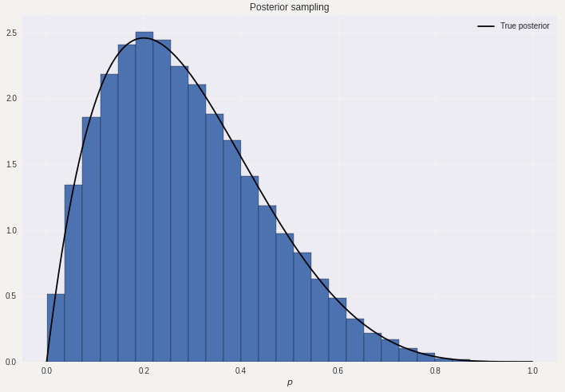
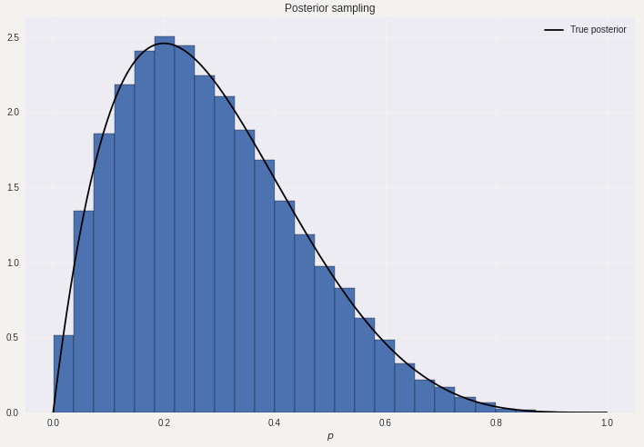

A Look at Approximate Bayesian Computation
Introduction
For those familiar with Bayesian statistics, most probably know that the update
rule to infer the posterior distribution containing knowledge about
the parameters \(\theta\) given data \(y\) is given as
$$p(\theta|y) = \frac{p(y|\theta)p(\theta)}{p(y)}.$$
While writing the rule out might be simple, depending on the involved densities,
calculating the posterior density could be difficult. What people might
not be aware of is that one can also obtain the posterior distribution through
an easy simulation based approach. If we have access to a way of easily
simulating samples \(\theta \sim p(\theta)\) and \(y \sim p(y|\theta)\),
then we can obtain posterior samples \(\theta \sim p(\theta|y)\) as follows:
In the toy example, we will have observed 5 coin flips which gave the sequence \([T,T,T,T,H]\) (four tails followed by one head). We are now interested in obtaining the posterior distribution for \(p\), the probability of obtaining heads in a coin flip. The coin flip is easily modelled by using the Binomial distribution and we put a uniform prior on \(p\). We sample \(p\) from the prior and simulate 5 coin flips, if they are equal to the sequence \([T,T,T,T,H]\) then we keep \(p\) as a sample from the posterior distribution. This model is easy to investigate since we can also calculate that the true posterior distribution is given as Beta(2,5), and thus we can compare our results with the ground truth. The histogram obtained from the sampling scheme and the density of the true posterior can be seen below.  As can be seen from the figure, we can obtain samples from the posterior with this scheme. Notice here how we actually did not need to know the functional form of the likelihood and prior to obtain samples from the posterior distribution, all we needed was a way to obtain samples from the two distributions. This is advantageous when we are working with complex simulation based models, where it can be easy to simulate observations from the model, but it might be difficult to write out a mathematical expression for the likelihood and prior.
- Simulate \(\theta \sim p(\theta)\) and subsequently \(y \sim p(y|\theta)\).
- If \(y\) equals the observed data, then accept the corresponding \(\theta\) as a sample from the posterior distribution.
In the toy example, we will have observed 5 coin flips which gave the sequence \([T,T,T,T,H]\) (four tails followed by one head). We are now interested in obtaining the posterior distribution for \(p\), the probability of obtaining heads in a coin flip. The coin flip is easily modelled by using the Binomial distribution and we put a uniform prior on \(p\). We sample \(p\) from the prior and simulate 5 coin flips, if they are equal to the sequence \([T,T,T,T,H]\) then we keep \(p\) as a sample from the posterior distribution. This model is easy to investigate since we can also calculate that the true posterior distribution is given as Beta(2,5), and thus we can compare our results with the ground truth. The histogram obtained from the sampling scheme and the density of the true posterior can be seen below.  As can be seen from the figure, we can obtain samples from the posterior with this scheme. Notice here how we actually did not need to know the functional form of the likelihood and prior to obtain samples from the posterior distribution, all we needed was a way to obtain samples from the two distributions. This is advantageous when we are working with complex simulation based models, where it can be easy to simulate observations from the model, but it might be difficult to write out a mathematical expression for the likelihood and prior.
Approximate Bayesian Computation
We can extend this scheme to the situation where
we do not require that our observed \(y\) should precisely
equal the observed data. We might be satisfied if
the data comes close enough to the observed data.
Thus if the sampled data \(y\) lies within a distance
\(\epsilon\) of the observed data \(\tilde{y}\) (i.e, \(d(\tilde{y}, y) \leq \epsilon\) for
some suitable distance measure \(d\)) then we accept the corresponding \(\theta\)
used to obtain the sample \(y\) as a sample from the posterior distribution.
While this scheme allow us to loosen the stringent requirement of equality
between \(y\) and \(\tilde{y}\), it does not solve the issue that it can be
time-consuming to obtain samples sufficiently close to the observed data.
For small sample sizes it can work ok, but as soon as we work with larger
samples than it can be difficult to obtain samples in the neighbourhood
of the observed data. Therefore we can often instead of working with the
original observed data \(\tilde{y}\), work with some form of reduced form,
e.g, summary statistics of \(\tilde{y}\) (and thus see if the distance
between summary statistics \(d(S(\tilde{y}), S(y))\) is sufficiently small).
Lastly, as with all sampling methods it is more efficient to use some
form of MCMC method to exploit knowledge about previously accepted samples
to speed up the sampling scheme compared to using a naive rejection
sampling approach. For this post, I will use ABC sampling in
the Metropolis-Hastings algorithm, but the method is not
restricted to this MCMC algorithm. In this ABC-MCMC scheme we
sample as follows
- (Initialization) Sample \(\theta \sim p(\theta)\) and \(y \sim p(y|\theta)\) until \(d(S(\tilde{y}),S(y)) \leq \epsilon\). Save the corresponding \(\theta\).
- (Start of MCMC) Sample a new \(\theta^* \sim q(\theta^*|\theta)\) (where \(q\) is some distribution that allows us to sample in the neighbourhood of \(\theta\), e.g, Gaussian).
- Sample a corresponding \(y^* \sim p(y|\theta^*)\).
- Check if \(d(S(\tilde{y}),S(y^*)) \leq \epsilon\), if not, go back to step 2 and sample another \(\theta^*\). If it is, then continue.
- Calculate the acceptance probability $$\alpha = \min \bigg( 1, \frac{p(\theta^*)}{p(\theta)}\frac{q(\theta|\theta^*)}{q(\theta^*|\theta)}\bigg)$$
- Sample \(u \sim U[0,1]\). If \(u \leq \alpha\), accept \(\theta^*\) as as sample from the posterior and set \(\theta = \theta^*\). Repeat the entire procedure from Step 2.